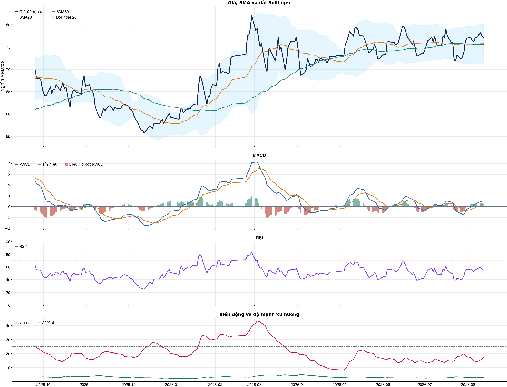
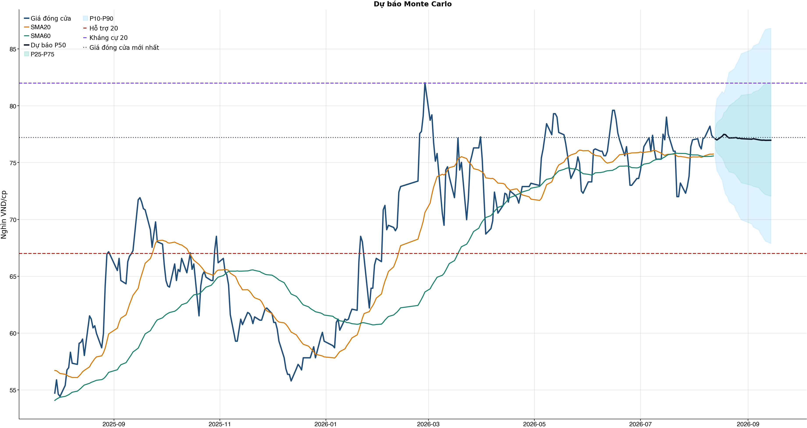
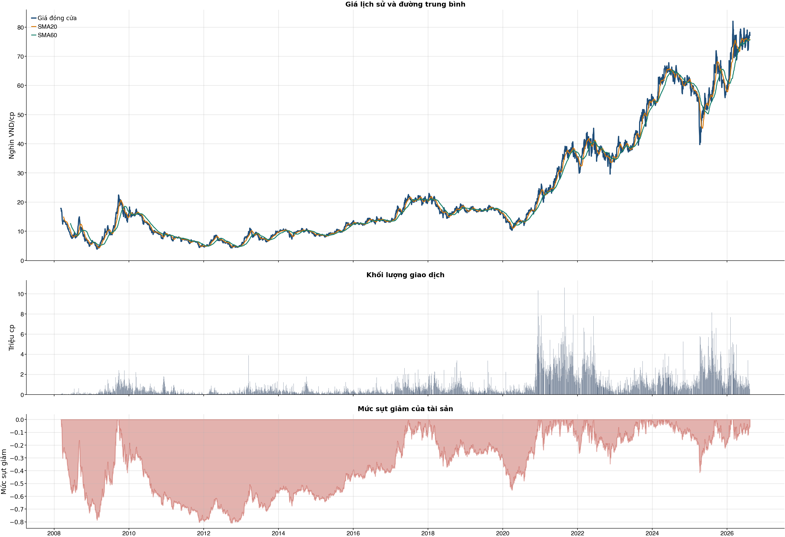

Kết quả chính
KPI đọc nhanh trước, chi tiết bấm mở bên dướiChi phí & vòng lệnh
Trọng tâm: tránh giao dịch nhiều làm phí ăn hết lợi thếBảng chính: turnover, gross, phí và net61 / 38 / 31 / 20 / 10 / 5 / 1
| Kịch bản | Cách chọn | Vòng | Gross trước phí | Phí | Net sau phí | Sharpe | Ghi chú |
|---|---|---|---|---|---|---|---|
| Gốc | Ngưỡng gốc ≥ 0.55 | 63 | +7.7% | 30.3% | -20.5% | -0.74 | Baseline 61 vòng nếu model phát tín hiệu nhiều. |
| Ngưỡng 0.58 | Chỉ vào lệnh khi xác suất ≥ 0.58 | 32 | +7.8% | 15.5% | -7.6% | -0.29 | Tăng ngưỡng để giảm vòng lệnh. |
| Ngưỡng 0.60 | Chỉ vào lệnh khi xác suất ≥ 0.60 | 16 | +10.3% | 7.8% | +2.0% | 0.13 | Tăng ngưỡng để giảm vòng lệnh. |
| Ngưỡng 0.62 | Chỉ vào lệnh khi xác suất ≥ 0.62 | 10 | +9.9% | 4.9% | +4.7% | 0.33 | Tăng ngưỡng để giảm vòng lệnh. |
| Giới hạn 10 vòng | Tối đa 10 vòng, ưu tiên xác suất cao hơn | 10 | +9.9% | 4.9% | +4.7% | 0.33 | Ngưỡng xác suất trong nhóm: 63.0%. |
| Giới hạn 5 vòng | Tối đa 5 vòng, ưu tiên xác suất cao hơn | 5 | +4.9% | 2.4% | +2.4% | 0.20 | Ngưỡng xác suất trong nhóm: 65.3%. |
| Giới hạn 1 vòng | Tối đa 1 vòng, ưu tiên xác suất cao hơn | 1 | +0.0% | 0.5% | -0.5% | -0.58 | Ngưỡng xác suất trong nhóm: 80.3%. |
Đọc bảng này từ trái sang phải: số vòng càng ít thì phí càng thấp, nhưng kết quả sau phí vẫn chỉ là kiểm thử OOS. Các dòng 10/5/1 giới hạn số vòng bằng xác suất model cao hơn, không phải chọn lệnh thắng sau khi biết kết quả và không tự biến NO_EDGE thành BUY.
Breakdown trước phí / sau phívì sao gross dương nhưng net âm
| Kịch bản trước chi phí | +7.7% | Gross PnL 7,676,072 VND; chưa trừ commission/slippage/tax. |
| Chi phí giao dịch | -30.3% | 63 vòng; entry 20.0 bps + exit 30.0 bps = 50.0 bps/vòng; tổng phí 27,079,394 VND. |
| Kịch bản sau chi phí | -20.5% | Net PnL -20,506,394 VND; gross - cost gap khoảng +28.2%. |
| Ngưỡng phí hòa vốn | 12.7 bps/vòng | Phí hiện tại 50.0 bps/vòng; cao hơn ngưỡng này thì gross dương vẫn có thể thành net âm. |
| Kết luận hành động | CHƯA CÓ LỢI THẾ (NO_EDGE) | Không mở vị thế mới; nếu đang giữ thì ưu tiên giảm/bán theo kỷ luật vì sau phí vẫn âm. |
| Cách cải thiện cần test | Giảm turnover | Hiện có 63 phiên active/63 vòng; nên test threshold 0.58/0.60/0.62 hoặc giữ nhiều phiên hơn. |
Kiểm thử chiến lược ngoài mẫu sau chi phí63 vòng
| Lợi nhuận ròng | -20.5% | 739 quan sát ngoài mẫu |
| Sharpe | -0.74 | Sau chi phí |
| Mức sụt giảm tối đa | -21.9% | 63 vòng giao dịch |
| Chi phí giả định | 50.0 bps | Một vòng mua và bán |
So sánh mô hìnhXGBoost vs Logistic
| XGBoost | 0.508 | AUC 0.528 |
| Logistic | 0.512 | AUC 0.539 |
| Đa số | 0.500 | Mốc so sánh |
Mức độ quan trọng của đặc trưngtop feature
| day_of_week | 10.66 | Mức đóng góp |
| return_kurtosis_20d | 9.95 | Mức đóng góp |
| return_3d | 9.95 | Mức đóng góp |
| macd_pct | 9.90 | Mức đóng góp |
| return_10d | 9.88 | Mức đóng góp |
| return_2d | 9.57 | Mức đóng góp |
| excess_return_5d | 9.48 | Mức đóng góp |
| close_vs_sma60 | 9.39 | Mức đóng góp |
Điều kiện phát hành tín hiệuCHƯA CÓ LỢI THẾ (NO_EDGE)
| AUC của mô hình | KHÔNG ĐẠT | Điều kiện phát hành tín hiệu |
| Độ chính xác cân bằng của mô hình | KHÔNG ĐẠT | Điều kiện phát hành tín hiệu |
| XGBoost vượt mô hình Logistic đối chứng | KHÔNG ĐẠT | Điều kiện phát hành tín hiệu |
| Xác suất tăng đạt ngưỡng | KHÔNG ĐẠT | Điều kiện phát hành tín hiệu |
| Bối cảnh kỹ thuật đạt ngưỡng | ĐẠT | Điều kiện phát hành tín hiệu |
| Tỷ lệ lợi nhuận/rủi ro đạt ngưỡng | ĐẠT | Điều kiện phát hành tín hiệu |
| Dữ liệu còn mới | ĐẠT | Điều kiện phát hành tín hiệu |
| Có khối lượng vị thế hợp lệ | ĐẠT | Điều kiện phát hành tín hiệu |
| Có kết quả kiểm thử chiến lược ngoài mẫu | ĐẠT | Điều kiện phát hành tín hiệu |
| Mẫu kiểm thử chiến lược đủ lớn | ĐẠT | Điều kiện phát hành tín hiệu |
| Kiểm thử chiến lược có lợi thế ròng | KHÔNG ĐẠT | Điều kiện phát hành tín hiệu |
Quản trị rủi rostop / target
| Rủi ro/lệnh | 1.0% | 1,000,000 VND |
| Mức dừng lỗ | 74.83 | Rủi ro mỗi cổ phiếu 2.75 |
| Mục tiêu 1 | 82.00 | Lợi nhuận/rủi ro 1.60 |
| Mục tiêu 2 | 86.82 | Dự báo/kháng cự |
Kỹ thuật
Biểu đồ mở sẵn, bảng tín hiệu thu gọnBiểu đồ kỹ thuật

Tín hiệu kỹ thuậtchi tiết
| Xu hướng | Tích cực | Giá nằm trên SMA20 và SMA60. |
| MACD | Tích cực | MACD trên signal, histogram dương. |
| RSI14 | Tích cực | RSI 55.1. |
| Bollinger | Ổn định | Giá nằm trong dải Bollinger. |
| ADX | Đi ngang | ADX 17.0. |
| Thanh khoản | Thấp | 0.62 lần trung bình. |
| Stochastic | Yếu lại | %K nằm dưới %D. |
Cơ bản & tin tức
Các bảng dài để trong nút bungPhân tích cơ bảnBCTC/tỷ số
| P/E | 12.78 | 2026-Q2 |
| P/B | 2.43 | 2026-Q2 |
| P/S | 5.24 | 2026-Q2 |
| ROE | 19.4% | 2026-Q2 |
| ROA | 12.8% | 2026-Q2 |
| Gross margin | 46.3% | 2026-Q2 |
| Net margin | 48.5% | 2026-Q2 |
| Debt/Equity | 0.36 | 2026-Q2 |
| Current ratio | 2.42 | 2026-Q2 |
| NPL | 0.0% | 2026-Q2 |
| Dividend yield | 0.0% | 2026-Q2 |
| Market cap | 33,505.9 tỷ | 2026-Q2 |
| Revenue Growth | 17.9% | 2026-Q2 YoY |
| Profit Growth | 154.6% | 2026-Q2 YoY |
| Dòng tiền từ HĐKD | 691.3 tỷ | 2026-Q2 |
| CAPEX | -174.2 tỷ | 2026-Q2 |
| Lợi nhuận sau thuế | 1,285.4 tỷ | 2026-Q2 |
| Lợi nhuận hoạt động | 1,537.2 tỷ | 2026-Q2 |
| Chi phí lãi vay | -44.0 tỷ | 2026-Q2 |
| Tiền và tương đương tiền | 1,788.3 tỷ | 2026-Q2 |
| Vay ngắn hạn | 322.8 tỷ | 2026-Q2 |
| Vay dài hạn | 2,196.4 tỷ | 2026-Q2 |
| Tổng tài sản | 21,261.3 tỷ | 2026-Q2 |
| Tổng nợ phải trả | 5,654.2 tỷ | 2026-Q2 |
| Vốn chủ sở hữu | 15,607.1 tỷ | 2026-Q2 |
| Khoản phải thu | 1,477.5 tỷ | 2026-Q2 |
| Hàng tồn kho | 148.9 tỷ | 2026-Q2 |
| Dòng tiền tự do (CFO - CAPEX) | 517.1 tỷ | 2026-Q2 |
| CFO / Lợi nhuận sau thuế | 0.54 | 2026-Q2 |
| Nợ vay ròng | 730.9 tỷ | 2026-Q2 |
| Nợ vay / Vốn chủ sở hữu | 0.16 | 2026-Q2 |
| Phải thu / Tổng tài sản | 6.9% | 2026-Q2 |
| Khả năng trả lãi (EBIT / lãi vay) | 34.91 | 2026-Q2 |
Tin tức doanh nghiệpresearch only
| Trạng thái | Có dữ liệu | research_only |
| Nguồn / số bài | VCI | 50 |
| Bài đủ timestamp | 50 | Chỉ các bài này mới được phép dùng point-in-time |
| Sentiment 5 ngày | 0.00 | 1.0 bài trước cutoff |
| Phương pháp | keyword_heuristic_v1 | Research only; chưa dùng làm tín hiệu mua/bán |
Dự báo
Kịch bản giá và lịch sử drawdownDự báo ngắn hạn20 phiên
| 2026-08-13 | 77.09 | P10 75.36 / P90 79.43 |
| 2026-08-14 | 76.99 | P10 74.31 / P90 80.61 |
| 2026-08-17 | 77.30 | P10 73.46 / P90 81.25 |
| 2026-08-18 | 77.48 | P10 72.73 / P90 81.07 |
| 2026-08-19 | 77.45 | P10 72.22 / P90 81.51 |
| 2026-08-20 | 77.28 | P10 72.02 / P90 82.30 |
| 2026-08-21 | 77.17 | P10 71.58 / P90 82.94 |
| 2026-08-24 | 77.18 | P10 71.22 / P90 83.25 |
Lịch giao dịch Việt Nam dùng cho forecastkhông tính T7/CN/lễ
VN stock calendar: loại Thứ Bảy/Chủ Nhật và các ngày nghỉ 2026 đã công bố; ngày làm bù Thứ Bảy không được tính là phiên giao dịch chứng khoán.
Ngày nghỉ đã loại: 2026-01-01, 2026-01-02, 2026-02-16, 2026-02-17, 2026-02-18, 2026-02-19, 2026-02-20, 2026-04-27, 2026-04-30, 2026-05-01, 2026-08-31, 2026-09-01, 2026-09-02
Nếu HOSE/HNX/UPCoM công bố nghỉ đột xuất, cần thêm ngày đó vào config `market_holidays` rồi chạy lại report.
Biểu đồ dự báo

Lịch sử giá và mức sụt giảm

Báo cáo dùng để học tập và lập kịch bản, không phải khuyến nghị mua/bán.
Phân tích AI có kiểm chứngbấm mở
Trạng thái quyết định: NO_EDGE
Tóm tắt: ML decision hiện giữ nguyên NO_EDGE. News Reader đã trích đoạn có nguồn của 5 bài để phân loại chủ đề (ket_qua_kinh_doanh: 4, co_tuc_va_hanh_dong_doanh_nghiep: 5, vi_mo: 3, nganh: 4, rui_ro: 2), nhưng các trích đoạn này không tạo bằng chứng mới cho quyết định đầu tư.
Kỹ thuật: Artifact kỹ thuật: bias Hồi phục / nghiêng tăng; điểm 4. Chi tiết artifact: Xu hướng: Tích cực (Giá nằm trên SMA20 và SMA60.); MACD: Tích cực (MACD trên signal, histogram dương.); RSI14: Tích cực (RSI 55.1.); Bollinger: Ổn định (Giá nằm trong dải Bollinger.); ADX: Đi ngang (ADX 17.0.); Thanh khoản: Thấp (0.62 lần trung bình.); Stochastic: Yếu lại (%K nằm dưới %D.)
Cơ bản: Artifact cơ bản: Tập đoàn Gemadept; kỳ 2026-Q2; P/E 12.78; P/B 2.43; ROE 19.4%; ROA 12.8%; Debt/Equity 0.36; Revenue Growth 17.9%; Profit Growth 154.6%.
Tin tức: Đã đọc trích đoạn giới hạn của 5 bài; phân nhóm rule-based: ket_qua_kinh_doanh: 4, co_tuc_va_hanh_dong_doanh_nghiep: 5, vi_mo: 3, nganh: 4, rui_ro: 2. Tác động cần kiểm chứng: Đối chiếu doanh thu/lợi nhuận trong bài với BCTC và kỳ vọng thị trường. Kiểm tra ngày GDKHQ, tỷ lệ, nguồn chi trả và nguy cơ pha loãng trước khi đánh giá tác động. Đối chiếu thời điểm công bố và kênh tác động lãi suất/tỷ giá với mô hình kinh doanh. So sánh tín hiệu ngành với thị phần, nhu cầu và đối thủ trước khi suy luận cho riêng doanh nghiệp. Xác minh công bố chính thức, phạm vi ảnh hưởng và khả năng định lượng rủi ro. Đây không phải sentiment hay dự báo tác động giá.
Live research: Live snapshot lấy lúc 2026-08-12T17:08:52.598713+00:00; News Reader đọc được 5 bài. ML có 5 lý do guard và vẫn là NO_EDGE. Không dùng tin live để train/backtest.
Rủi ro cần kiểm chứng
- ML guard: AUC 0.528 < 0.540
- ML guard: Balanced accuracy 0.508 < 0.520
- ML guard: XGBoost chưa vượt logistic baseline: AUC XGBoost=0.5276393751683275, AUC logistic=0.5390295358649789
- ML guard: Probability 48.1% < 55.0%
- ML guard: Lợi thế OOS ròng không đạt: return=-0.2050639400000005, Sharpe=-0.7448701519430575
- News Reader: Đối chiếu doanh thu/lợi nhuận trong bài với BCTC và kỳ vọng thị trường.
- News Reader: Kiểm tra ngày GDKHQ, tỷ lệ, nguồn chi trả và nguy cơ pha loãng trước khi đánh giá tác động.
- News Reader: Đối chiếu thời điểm công bố và kênh tác động lãi suất/tỷ giá với mô hình kinh doanh.
- News Reader: So sánh tín hiệu ngành với thị phần, nhu cầu và đối thủ trước khi suy luận cho riêng doanh nghiệp.
- News Reader: Xác minh công bố chính thức, phạm vi ảnh hưởng và khả năng định lượng rủi ro.
- Chỉ lưu trích đoạn giới hạn để kiểm chứng nguồn; không lưu hay hiển thị toàn văn bài báo.
- Phân nhóm là keyword rule-based để định tuyến research, không phải sentiment hay dự báo tác động giá.
- Dữ liệu News Reader chỉ phục vụ research/report; không dùng làm feature train/backtest khi chưa có lịch sử available_at point-in-time.
- Tin live/trích đoạn cần mở URL gốc để kiểm chứng bối cảnh, số liệu và thời điểm trước khi sử dụng.
Bằng chứng
- ML decision artifact: NO_EDGE. AUC 0.528 < 0.540
- ML decision artifact: NO_EDGE. Balanced accuracy 0.508 < 0.520
- ML decision artifact: NO_EDGE. XGBoost chưa vượt logistic baseline: AUC XGBoost=0.5276393751683275, AUC logistic=0.5390295358649789
- ML decision artifact: NO_EDGE. Probability 48.1% < 55.0%
- ML decision artifact: NO_EDGE. Lợi thế OOS ròng không đạt: return=-0.2050639400000005, Sharpe=-0.7448701519430575
- News Reader [thuonghieucongluan.com.vn]: Cổ phiếu đáng chú ý ngày 7/8: FPT, GMD, SAB - thuonghieucongluan.com.vn | nhóm: ket_qua_kinh_doanh, co_tuc_va_hanh_dong_doanh_nghiep, vi_mo, nganh, rui_ro (2026-08-06T23:23:00+00:00)
- News Reader [Vietstock]: GMD: Thông báo nhận được công văn của UBCKNN về tài liệu báo cáo phát hành cổ phiếu theo chương trình lựa chọn cho người lao động - Vietstock | nhóm: co_tuc_va_hanh_dong_doanh_nghiep (2026-08-07T08:30:10+00:00)
- News Reader [Báo Pháp Luật Việt Nam]: Tập đoàn Gemadept (GMD): Phát hành thành công gần 6,4 triệu cổ phiếu ESOP, lãi quý II tăng bằng lần - Báo Pháp Luật Việt Nam | nhóm: ket_qua_kinh_doanh, co_tuc_va_hanh_dong_doanh_nghiep, nganh (2026-08-06T02:06:00+00:00)
- News Reader [MoneyF]: Cổ phiếu đáng chú ý ngày 7/8: FPT hưởng lợi từ làn sóng AI, GMD chờ cú hích Gemalink - MoneyF | nhóm: ket_qua_kinh_doanh, co_tuc_va_hanh_dong_doanh_nghiep, vi_mo, nganh (2026-08-07T00:41:00+00:00)
- News Reader [nguoiquansat.vn]: CTCK khuyến nghị 6 cổ phiếu hot trong tháng 8/2026, tiềm năng tăng giá hàng chục % - nguoiquansat.vn | nhóm: ket_qua_kinh_doanh, co_tuc_va_hanh_dong_doanh_nghiep, vi_mo, nganh, rui_ro (2026-08-06T00:06:01+00:00)
Báo cáo chỉ tổng hợp artifact đã lưu để nghiên cứu; không phải khuyến nghị mua/bán. Quyết định và vị thế vẫn bị khóa theo signal_decision.json.
Tác động của tin lên model
Trạng thái: research_only · Áp vào signal chính: not_applied
Khuyến nghị hệ thống: Chỉ hiển thị như shadow/research, chưa thay signal chính.
Gate chưa đạt: min_articles_60, min_feature_rows_30, news_feature_gain_positive, auc_at_least_0_55, balanced_accuracy_at_least_0_52
News feature importance
| Feature tin | Gain |
|---|---|
| news_count_lookback | 0.000 |
| news_sentiment_mean_lookback | 0.000 |
| news_positive_count_lookback | 0.000 |
| news_negative_count_lookback | 0.000 |
| news_earnings_count_lookback | 0.000 |
| news_corporate_action_count_lookback | 0.000 |
| news_legal_count_lookback | 0.000 |
| news_source_count_lookback | 0.000 |
Điều kiện bật news vào signal chính
| Gate | Kết quả |
|---|---|
| min_articles_60 | Chưa đạt |
| min_feature_rows_30 | Chưa đạt |
| news_feature_gain_positive | Chưa đạt |
| auc_at_least_0_55 | Chưa đạt |
| balanced_accuracy_at_least_0_52 | Chưa đạt |
CSV dựng từ live snapshots chỉ phù hợp smoke test/research; cần lịch sử available_at dài hơn trước khi dùng production.
Tin web đã lấyheadline + nguồn
| Nguồn | Tiêu đề | Thời điểm | Link |
|---|---|---|---|
| thuonghieucongluan.com.vn | Cổ phiếu đáng chú ý ngày 7/8: FPT, GMD, SAB - thuonghieucongluan.com.vn | 2026-08-06T23:23:00+00:00 | Mở nguồn |
| Vietstock | GMD: Thông báo nhận được công văn của UBCKNN về tài liệu báo cáo phát hành cổ phiếu theo chương trình lựa chọn cho người lao động - Vietstock | 2026-08-07T08:30:10+00:00 | Mở nguồn |
| Báo Pháp Luật Việt Nam | Tập đoàn Gemadept (GMD): Phát hành thành công gần 6,4 triệu cổ phiếu ESOP, lãi quý II tăng bằng lần - Báo Pháp Luật Việt Nam | 2026-08-06T02:06:00+00:00 | Mở nguồn |
| MoneyF | Cổ phiếu đáng chú ý ngày 7/8: FPT hưởng lợi từ làn sóng AI, GMD chờ cú hích Gemalink - MoneyF | 2026-08-07T00:41:00+00:00 | Mở nguồn |
| nguoiquansat.vn | CTCK khuyến nghị 6 cổ phiếu hot trong tháng 8/2026, tiềm năng tăng giá hàng chục % - nguoiquansat.vn | 2026-08-06T00:06:01+00:00 | Mở nguồn |
| Tin nhanh chứng khoán | Cổ phiếu cần quan tâm ngày 7/8 - Tin nhanh chứng khoán | 2026-08-06T10:30:00+00:00 | Mở nguồn |
| MoneyF | 4 cổ phiếu được “gọi tên” trước phiên 10/8: Một mã còn dư địa tăng 19%, một mã hưởng lợi đầu tư công - MoneyF | 2026-08-10T01:25:00+00:00 | Mở nguồn |
| Việt Báo | VHM, VCB, TCB, STB, FPT, GMD, PHP vào danh mục đầu tư tháng 8? - Việt Báo | 2026-08-05T22:01:39+00:00 | Mở nguồn |
News Reader: bài đã đọc và trích đoạnbấm mở trích đoạn
| Nguồn | Tiêu đề | Nhóm | Thời điểm | Trích đoạn đã đọc | Link |
|---|---|---|---|---|---|
| thuonghieucongluan.com.vn | Cổ phiếu đáng chú ý ngày 7/8: FPT, GMD, SAB - thuonghieucongluan.com.vn | ket_qua_kinh_doanh, co_tuc_va_hanh_dong_doanh_nghiep, vi_mo, nganh, rui_ro | 2026-08-06T23:23:00+00:00 | Xem trích đoạnCỡ chữ A − Cỡ chữ nhỏ A Cỡ chữ vừa A + Cỡ chữ lớn 06:23 07/08/2026 Thương hiệu Tài chính - Chứng khoán FPT: Động lực tăng trưởng đến từ làn sóng chuyển đổi AI CTCK Bảo Việt (BVSC) tiếp tục duy trì khuyến nghị OUTPERFORM đối với cổ phiếu FPT, đồng thời đưa ra giá mục tiêu 87.700 đồng/cổ phiếu, thấp hơn khoảng 7% so với báo cáo trước do điều chỉnh suất chiết khấu trong bối cảnh mặt bằng lãi suất và chi phí cơ hội gia tăng. Theo BVSC, việc điều chỉnh giá mục tiêu không làm thay đổi triển vọng dài hạn của doanh nghiệp. Điểm nhấn vẫn nằm ở mảng dịch vụ công nghệ, đặc biệt là quá trình chuyển dịch từ chuyển đổi số sang chuyển đổi AI (AI Transformation - AIX). Công ty chứng khoán cho rằng nếu FPT tiếp tục chứng minh được khả năng cung cấp các giải pháp AI có tính ứng dụng cao, giúp khách hàng tối ưu chi phí và nâng cao năng suất, doanh nghiệp sẽ bước vào chu kỳ tăng trưởng mới với giá trị hợp đồng lớn hơn. Trong thời gian tới, BVSC sẽ tiếp tục theo dõi các chỉ tiêu như tốc độ tăng đơn hàng ký mới, doanh thu từ chuyển đổi số và AI, năng suất lao động cũng như biên lợi nhuận để đánh giá khả năng duy trì đà tăng trưởng của FPT. GMD: Câu chuyện tăng trưởng không chỉ đến từ kết quả kinh doanh CTCK Yuanta giữ quan điểm khả quan đối với cổ phiếu Gemadept (GMD) sau khi doanh nghiệp công bố kết quả kinh doanh quý II tích cực. Doanh thu quý II đạt 1.763 tỷ đồng, tăng 18% so với cùng kỳ, trong khi lợi nhuận sau thuế thuộc cổ đông công ty mẹ tăng mạnh lên 1.133 tỷ đồng. Bên cạnh khoản lợi nhuận bất thường từ thương vụ thoái vốn tại CJ Gemadept, hoạt động kinh doanh cốt lõi cũng ghi nhận mức tăng trưởng tích cực. Theo Yuanta, cảng Gemalink tiếp tục là tài sản quan trọng nhất của Gemadept. Sản lượng container thông qua cảng tăng mạnh và công suất hiện đã vượt thiết kế, tạo cơ sở để doanh nghiệp đẩy nhanh triển khai Gemalink giai đoạn 2, dự kiến đưa vào khai thác từ quý IV/2027. Ngoài ra, kế hoạch chuyển nhượng 24% cổ phần tại Gemalink cho đối tác quốc tế cùng phương án thoái vốn dự án cao su tại Campuchia được kỳ vọng sẽ mang lại nguồn lợi nhuận đáng kể trong giai đoạn 2026-2027. Yuanta đánh giá GMD vẫn đang được giao dịch quanh mức P/B trung bình 5 năm, trong khi doanh nghiệp còn nhiều dư địa tăng trưởng nhờ mở rộng công suất khai thác cảng và tái cơ cấu danh mục đầu tư. SAB: Kết quả kinh doanh cải thiện nhưng vẫn cần theo dõi Đối với Sabeco (SAB), CTCK DSC lựa chọn quan điểm | Mở nguồn |
| Vietstock | GMD: Thông báo nhận được công văn của UBCKNN về tài liệu báo cáo phát hành cổ phiếu theo chương trình lựa chọn cho người lao động - Vietstock | co_tuc_va_hanh_dong_doanh_nghiep | 2026-08-07T08:30:10+00:00 | Xem trích đoạnGMD: Thông báo nhận được công văn của UBCKNN về tài liệu báo cáo phát hành cổ phiếu theo chương trình lựa chọn cho người lao động Công ty Cổ phần Tập đoàn GEMADEPT thông báo nhận được công văn của UBCKNN về tài liệu báo cáo phát hành cổ phiếu theo chương trình lựa chọn cho người lao động như sau: Tài liệu đính kèm: 20260806 - GMD - CV UBCK chap thuan BCKQPH ESPP 2025.pdf HOSE GMD: Thông báo nhận được công văn của UBCKNN về tài liệu báo cáo phát hành cổ phiếu theo chương trình lựa chọn cho người lao động Công ty Cổ phần Tập đoàn GEMADEPT thông báo nhận được công văn của UBCKNN về tài liệu báo cáo phát hành cổ phiếu theo chương trình lựa chọn cho người lao động như | Mở nguồn |
| Báo Pháp Luật Việt Nam | Tập đoàn Gemadept (GMD): Phát hành thành công gần 6,4 triệu cổ phiếu ESOP, lãi quý II tăng bằng lần - Báo Pháp Luật Việt Nam | ket_qua_kinh_doanh, co_tuc_va_hanh_dong_doanh_nghiep, nganh | 2026-08-06T02:06:00+00:00 | Xem trích đoạnTập đoàn Gemadept (GMD): Phát hành thành công gần 6,4 triệu cổ phiếu ESOP, lãi quý II tăng bằng lần Sau đợt phát hành, vốn điều lệ của Gemadept tăng từ gần 4.265 tỷ đồng lên gần 4.329 tỷ đồng. Phân phối thành công gần 6,4 triệu cổ phiếu ESOP CTCP Tập đoàn Gemadept (mã ck: GMD) vừa công bố kết quả phát hành cổ phiếu theo chương trình lựa chọn cho người lao động (ESOP). Theo đó, doanh nghiệp đã phân phối thành công gần 6,4 triệu cổ phiếu cho 104 cán bộ, nhân viên, tương ứng 100% lượng cổ phiếu dự kiến phát hành. Với mệnh giá 10.000 đồng/cổ phiếu, qua đó Gemadept thu về gần 64 tỷ đồng. Theo kế hoạch, toàn bộ số tiền thu được sẽ được sử dụng để bổ sung vốn lưu động, phục vụ nhu cầu hoạt động sản xuất kinh doanh của doanh nghiệp. Cổ phiếu ESOP dự kiến được chuyển giao trong giai đoạn tháng 8 đến tháng 9/2026, sau khi Gemadept hoàn tất các thủ tục đăng ký bổ sung cổ phiếu tại Tổng công ty Lưu ký và Bù trừ Chứng khoán Việt Nam (VSDC) và HOSE. Song song với việc tăng vốn, Gemadept cũng ghi nhận kết quả kinh doanh tăng trưởng mạnh trong quý II/2026. Theo báo cáo tài chính hợp nhất quý II/2026, doanh thu thuần của GMD đạt gần 1.761,5 tỷ đồng, tăng 17,7% so với cùng kỳ năm trước. Giá vốn hàng bán tăng từ 851 tỷ lên gần 891 tỷ đồng. Lợi nhuận gộp đạt hơn 870 tỷ đồng, tăng gần 35%. Điểm sáng trong kỳ đến từ doanh thu tài chính tăng đột biến lên hơn 687 tỷ đồng, gấp khoảng 11 lần so với cùng kỳ. Động lực chủ yếu là khoản lãi gần 609 tỷ đồng từ chuyển nhượng các khoản đầu tư dài hạn, trong khi cùng kỳ năm trước không phát sinh khoản thu này. Ngoài ra, phần lợi nhuận từ các công ty liên doanh, liên kết cũng tăng 58,5%, đạt hơn 382 tỷ đồng. Thu nhập khác đạt trên 16 tỷ đồng, cao gấp hơn 3 lần cùng kỳ. Nhờ đó, lợi nhuận sau thuế quý II đạt gần 1.285 tỷ đồng, tăng gấp 2,2 lần so với cùng kỳ năm 2025. Lũy kế 6 tháng đầu năm 2026, Gemadept ghi nhận doanh thu thuần gần 3.214 tỷ đồng, tăng 16% so với cùng kỳ. Lợi nhuận sau thuế đạt hơn 1.935,6 tỷ đồng, tăng 71%. Năm 2026, doanh nghiệp xây dựng hai kịch bản kinh doanh. Theo kịch bản đăng ký, Gemadept đặt mục tiêu doanh thu thuần 6.500 tỷ đồng và lợi nhuận trước thuế 2.800 tỷ đồng; trong khi kịch bản phấn đấu lần lượt là 6.800 tỷ đồng và 3.000 tỷ đồng. Với kết quả đạt được sau hai quý đầu năm, doanh nghiệp đã hoàn thành khoảng 49,4% kế hoạch doanh thu và 69,1% mục tiêu lợi nhuận theo kịch bản đăng ký, tạo nền tảng tích cực cho | Mở nguồn |
| MoneyF | Cổ phiếu đáng chú ý ngày 7/8: FPT hưởng lợi từ làn sóng AI, GMD chờ cú hích Gemalink - MoneyF | ket_qua_kinh_doanh, co_tuc_va_hanh_dong_doanh_nghiep, vi_mo, nganh | 2026-08-07T00:41:00+00:00 | Xem trích đoạnFPT tiếp tục được kỳ vọng nhờ làn sóng chuyển đổi AI, trong khi GMD duy trì triển vọng tăng trưởng với động lực từ cảng Gemalink. Ở chiều ngược lại, SAB được khuyến nghị theo dõi khi đối mặt với áp lực từ chính sách thuế và sức tiêu dùng ngành bia. Chứng khoán Yuanta tiếp tục đưa ra khuyến nghị Khả quan đối với cổ phiếu của CTCP Gemadept (HoSE: GMD). Trong quý II/2026, GMD ghi nhận doanh thu 1.763 tỷ đồng, tăng 18% so với cùng kỳ, trong khi lợi nhuận sau thuế thuộc về cổ đông công ty mẹ đạt 1.133 tỷ đồng, tăng 155%. Theo Yuanta, ngoài khoản lợi nhuận bất thường từ việc thoái 49,1% vốn tại CJ Gemadept, hoạt động kinh doanh cốt lõi của doanh nghiệp cũng duy trì tăng trưởng mạnh. Nếu loại trừ khoản thu nhập một lần này, lợi nhuận cốt lõi vẫn tăng khoảng 55% so với cùng kỳ. Động lực chính đến từ cảng Gemalink khi sản lượng container thông qua cảng trong quý II tăng 26%, giúp lợi nhuận từ công ty liên kết tiếp tục cải thiện. Triển vọng của GMD được hỗ trợ bởi cảng Gemalink và các thương vụ thoái vốn đang triển khai. Yuanta đánh giá Gemalink giai đoạn 2 sẽ là động lực tăng trưởng lớn nhất của GMD trong trung hạn. Dự án đã được khởi công từ tháng 4/2026 và dự kiến đưa vào khai thác trong quý IV/2027, nâng công suất cảng thêm khoảng 83%. Ngoài ra, GMD cũng đang đàm phán bán 24% cổ phần tại Gemalink cho một hãng tàu quốc tế trong thời gian 2026-2027. Cảng Gemalink sở hữu vị trí chiến lược tại cửa ngõ Cái Mép – Thị Vải, có thể nhận tàu siêu lớn, công suất giai đoạn 1 + 2 khoảng 2,7 triệu TEU/năm. Theo Yuanta, thương vụ này có thể mang về khoảng 5.000 tỷ đồng nếu đạt mức định giá kỳ vọng. Bên cạnh đó, kế hoạch thoái vốn dự án cao su tại Campuchia trong năm 2026 cũng được kỳ vọng tạo thêm khoản lợi nhuận bất thường cho doanh nghiệp. Theo Yuanta, GMD hiện giao dịch ở mức P/B khoảng 2,4 lần, tương đương mức trung bình 5 năm, trong khi vẫn còn nhiều động lực tăng trưởng từ hoạt động khai thác cảng và các kế hoạch tái cơ cấu tài sản. Chứng khoán Bảo Việt (BVSC) duy trì khuyến nghị Outperform đối với cổ phiếu CTCP FPT (HoSE: FPT), đồng thời điều chỉnh giảm nhẹ giá mục tiêu xuống 87.700 đồng/cổ phiếu, thấp hơn khoảng 7% so với báo cáo trước do cập nhật mức chiết khấu cao hơn trong bối cảnh mặt bằng lãi suất và chi phí cơ hội gia tăng. Theo BVSC, triển vọng dài hạn của FPT vẫn được đánh giá tích cực nhờ nhu cầu chuyển đổi số trên toàn cầu tiếp tục mở rộng, đặc biệt là xu | Mở nguồn |
| nguoiquansat.vn | CTCK khuyến nghị 6 cổ phiếu hot trong tháng 8/2026, tiềm năng tăng giá hàng chục % - nguoiquansat.vn | ket_qua_kinh_doanh, co_tuc_va_hanh_dong_doanh_nghiep, vi_mo, nganh, rui_ro | 2026-08-06T00:06:01+00:00 | Xem trích đoạnAgriseco vừa công bố danh mục khuyến nghị tháng 8/2026 với 6 cổ phiếu trải rộng từ ngân hàng, thép đến logistics và tiêu dùng, đều được kỳ vọng còn dư địa tăng giá hai chữ số. CTCP Chứng khoán Agribank (Agriseco) vừa công bố báo cáo Danh mục khuyến nghị tháng 8/2026, trong đó lựa chọn 6 cổ phiếu gồm BMP, HPG , GMD, MBB, VNM và VPB. Theo Agriseco, sau nhịp điều chỉnh mạnh trong tháng 7, VN-Index được kỳ vọng có thể phục hồi lên vùng 1.800 điểm nhờ mặt bằng định giá hấp dẫn cùng các chính sách hỗ trợ tăng trưởng kinh tế. Theo Agriseco, thị trường bước sang tháng 8 với nhiều yếu tố hỗ trợ và rủi ro đan xen. Động lực tích cực đến từ việc Chính phủ tiếp tục thúc đẩy giải ngân đầu tư công, thu hút vốn FDI nhằm hướng tới mục tiêu tăng trưởng GDP 10% trong năm 2026. Bên cạnh đó, mặt bằng định giá của thị trường hiện ở mức hấp dẫn khi P/E khoảng 11,7 lần, thấp hơn mức trung bình 5 năm và lợi nhuận doanh nghiệp được kỳ vọng tiếp tục tăng trưởng trong các tháng tới. Ở chiều ngược lại, công ty chứng khoán cũng lưu ý áp lực lạm phát, hoạt động bán ròng của khối ngoại cùng những bất ổn địa chính trị toàn cầu vẫn có thể ảnh hưởng đến diễn biến của thị trường. Trong bối cảnh đó, Agriseco khuyến nghị nhà đầu tư ưu tiên các doanh nghiệp có nền tảng cơ bản tốt, định giá hợp lý và triển vọng lợi nhuận tích cực. Ngân hàng Quân đội (MBB): Giá mục tiêu 28.000 đồng/cp Theo báo cáo, lợi nhuận trước thuế quý II/2026 của MBB đạt 10.560 tỷ đồng, tăng 41% so với cùng kỳ, chủ yếu nhờ thu nhập lãi thuần tăng 37% và chi phí dự phòng rủi ro tín dụng giảm. Lũy kế 6 tháng đầu năm, lợi nhuận trước thuế đạt 20.188 tỷ đồng, tăng 27%, trong khi tổng thu nhập hoạt động tăng 20%. Tính đến cuối quý II, dư nợ cho vay của MBB đạt 1,26 triệu tỷ đồng, tăng 13% so với đầu năm, chủ yếu nhờ cho vay khách hàng doanh nghiệp tăng 16%. Trong khi đó, huy động vốn tăng 8%, tỷ lệ CASA đạt 34%. Agriseco cho biết MBB hiện giao dịch ở mức P/B khoảng 1,1 lần, thấp hơn mức bình quân ngành khoảng 1,4 lần, trong khi ROE bốn quý gần nhất đạt 22%, thuộc nhóm cao trong ngành ngân hàng. Công ty chứng khoán kỳ vọng lợi nhuận năm 2026 tăng khoảng 20%, cùng với tăng trưởng tín dụng đạt 18-20%, qua đó đánh giá cổ phiếu phù hợp với chiến lược nắm giữ trung và dài hạn. Trong quý II/2026, Hòa Phát ghi nhận doanh thu 55.159 tỷ đồng và lợi nhuận sau thuế 6.371 tỷ đồng, tăng lần lượt 53,6% và 49,7% so với cùng kỳ. Lũy kế 6 tháng đầu | Mở nguồn |
Chi tiết báo cáo tài chínhbảng dài
Kết quả kinh doanh — 4 kỳ gần nhất
Hiển thị 35 dòng đầu; mở CSV đầy đủ.
| Khoản mục | 2026-Q2 | 2026-Q1 | 2025-Q4 | 2025-Q3 |
|---|---|---|---|---|
| Doanh thu bán hàng và cung cấp dịch vụ | 1,761.6 tỷ | 1,452.4 tỷ | 1,624.9 tỷ | 1,560.5 tỷ |
| Các khoản giảm trừ doanh thu | 0.0 tỷ | 0.0 tỷ | 0.0 tỷ | 0.0 tỷ |
| Doanh thu thuần | 1,761.6 tỷ | 1,452.4 tỷ | 1,624.9 tỷ | 1,560.5 tỷ |
| Giá vốn hàng bán | -890.8 tỷ | -815.9 tỷ | -835.2 tỷ | -894.3 tỷ |
| Lợi nhuận gộp | 870.7 tỷ | 636.5 tỷ | 789.6 tỷ | 666.2 tỷ |
| Doanh thu hoạt động tài chính | 687.0 tỷ | 60.1 tỷ | 87.5 tỷ | 49.5 tỷ |
| Chi phí tài chính | -41.9 tỷ | -42.3 tỷ | 8.3 tỷ | -74.8 tỷ |
| Chi phí lãi vay | -44.0 tỷ | -40.9 tỷ | -39.0 tỷ | -23.8 tỷ |
| Chi phí bán hàng | -208.8 tỷ | -105.9 tỷ | -193.0 tỷ | -120.7 tỷ |
| Chi phí quản lý doanh nghiệp | -152.0 tỷ | -143.7 tỷ | -166.2 tỷ | -198.4 tỷ |
| Lãi/(lỗ) từ hoạt động kinh doanh | 1,537.2 tỷ | 716.3 tỷ | 916.9 tỷ | 618.8 tỷ |
| Thu nhập khác | 16.2 tỷ | 3.3 tỷ | 18.4 tỷ | 15.9 tỷ |
| Chi phí khác | -3.1 tỷ | -3.1 tỷ | -186.5 tỷ | -123.2 tỷ |
| Thu nhập khác, ròng | 13.1 tỷ | 0.2 tỷ | -168.1 tỷ | -107.4 tỷ |
| Lãi/(lỗ) từ công ty liên doanh | 0.0 tỷ | 0.0 tỷ | 0.0 tỷ | 0.0 tỷ |
| Lãi/(lỗ) trước thuế | 1,550.3 tỷ | 716.4 tỷ | 748.8 tỷ | 511.5 tỷ |
| Thuế thu nhập doanh nghiệp - hiện thời | -264.4 tỷ | -72.6 tỷ | -75.0 tỷ | -86.0 tỷ |
| Thuế thu nhập doanh nghiệp - hoãn lại | -0.4 tỷ | 6.4 tỷ | 64.5 tỷ | 7.0 tỷ |
| Chi phí thuế thu nhập doanh nghiệp | -264.9 tỷ | -66.2 tỷ | -10.5 tỷ | -79.0 tỷ |
| Lãi/(lỗ) thuần sau thuế | 1,285.4 tỷ | 650.2 tỷ | 738.3 tỷ | 432.4 tỷ |
| Lợi ích của cổ đông thiểu số | 151.9 tỷ | 116.0 tỷ | 146.1 tỷ | 117.2 tỷ |
| Lợi nhuận của Cổ đông của Công ty mẹ | 1,133.5 tỷ | 534.2 tỷ | 592.2 tỷ | 315.2 tỷ |
| Lãi cơ bản trên cổ phiếu (VND) | 0.0 tỷ | 0.0 tỷ | 0.0 tỷ | 0.0 tỷ |
| Lãi trên cổ phiếu pha loãng (VND) | 0.0 tỷ | 0.0 tỷ | 0.0 tỷ | 0.0 tỷ |
| Lãi/(lỗ) từ công ty liên doanh (từ năm 2015) | 382.2 tỷ | 311.5 tỷ | 390.6 tỷ | 297.0 tỷ |
Bảng cân đối kế toán — 4 kỳ gần nhất
Hiển thị 35 dòng đầu; mở CSV đầy đủ.
| Khoản mục | 2026-Q2 | 2026-Q1 | 2025-Q4 | 2025-Q3 |
|---|---|---|---|---|
| TÀI SẢN NGẮN HẠN | 7,187.3 tỷ | 6,244.7 tỷ | 6,206.2 tỷ | 6,117.6 tỷ |
| Tiền và tương đương tiền | 1,788.3 tỷ | 1,889.7 tỷ | 1,622.3 tỷ | 2,205.3 tỷ |
| Tiền | 531.9 tỷ | 411.0 tỷ | 390.6 tỷ | 1,174.0 tỷ |
| Các khoản tương đương tiền | 1,256.4 tỷ | 1,478.8 tỷ | 1,231.7 tỷ | 1,031.2 tỷ |
| Đầu tư ngắn hạn | 3,553.0 tỷ | 2,825.0 tỷ | 2,738.6 tỷ | 2,207.3 tỷ |
| Đầu tư ngắn hạn | 0.0 tỷ | 0.0 tỷ | 0.0 tỷ | 0.0 tỷ |
| Dự phòng giảm giá | 0.0 tỷ | 0.0 tỷ | 0.0 tỷ | 0.0 tỷ |
| Các khoản phải thu | 1,477.5 tỷ | 1,238.5 tỷ | 1,398.7 tỷ | 1,303.0 tỷ |
| Phải thu khách hàng | 890.1 tỷ | 637.9 tỷ | 673.8 tỷ | 738.1 tỷ |
| Trả trước người bán | 198.9 tỷ | 195.7 tỷ | 196.8 tỷ | 222.7 tỷ |
| Phải thu nội bộ | 0.0 tỷ | 0.0 tỷ | 0.0 tỷ | 0.0 tỷ |
| Phải thu hợp đồng xây dựng đang thực hiện | 0.0 tỷ | 0.0 tỷ | 0.0 tỷ | 0.0 tỷ |
| Phải thu khác | 429.9 tỷ | 447.5 tỷ | 520.7 tỷ | 339.6 tỷ |
| Dự phòng nợ khó đòi | -41.5 tỷ | -42.6 tỷ | -53.5 tỷ | -48.3 tỷ |
| Hàng tồn kho, ròng | 148.9 tỷ | 102.2 tỷ | 92.5 tỷ | 85.1 tỷ |
| Hàng tồn kho | 148.9 tỷ | 102.2 tỷ | 92.5 tỷ | 85.1 tỷ |
| Dự phòng giảm giá hàng tồn kho | 0.0 tỷ | 0.0 tỷ | 0.0 tỷ | 0.0 tỷ |
| Tài sản lưu động khác | 219.6 tỷ | 189.2 tỷ | 354.1 tỷ | 316.9 tỷ |
| Chi phí trả trước ngắn hạn | 51.0 tỷ | 49.5 tỷ | 49.4 tỷ | 27.6 tỷ |
| Thuế GTGT được khấu trừ | 163.5 tỷ | 133.2 tỷ | 301.3 tỷ | 287.5 tỷ |
| Phải thu thuế khác | 5.1 tỷ | 6.5 tỷ | 3.4 tỷ | 1.8 tỷ |
| Tài sản lưu động khác | 0.0 tỷ | 0.0 tỷ | 0.0 tỷ | 0.0 tỷ |
| TÀI SẢN DÀI HẠN | 14,073.9 tỷ | 13,936.9 tỷ | 13,620.2 tỷ | 13,204.8 tỷ |
| Phải thu dài hạn | 33.6 tỷ | 38.8 tỷ | 46.8 tỷ | 45.8 tỷ |
| Phải thu khách hàng dài hạn | 0.0 tỷ | 0.0 tỷ | 0.0 tỷ | 0.0 tỷ |
| Phải thu nội bộ dài hạn | 0.0 tỷ | 0.0 tỷ | 0.0 tỷ | 0.0 tỷ |
| Phải thu dài hạn khác | 33.6 tỷ | 38.8 tỷ | 38.7 tỷ | 37.7 tỷ |
| Dự phòng phải thu dài hạn | 0.0 tỷ | 0.0 tỷ | 0.0 tỷ | 0.0 tỷ |
| Tài sản cố định | 5,992.9 tỷ | 5,706.1 tỷ | 5,584.2 tỷ | 3,977.9 tỷ |
| GTCL TSCĐ hữu hình | 5,748.7 tỷ | 5,461.5 tỷ | 5,338.7 tỷ | 3,730.4 tỷ |
| Nguyên giá TSCĐ hữu hình | 9,197.9 tỷ | 8,404.7 tỷ | 8,164.6 tỷ | 6,469.8 tỷ |
| Khấu hao lũy kế TSCĐ hữu hình | -3,449.2 tỷ | -2,943.2 tỷ | -2,825.8 tỷ | -2,739.4 tỷ |
| GTCL tài sản thuê tài chính | 0.0 tỷ | 0.0 tỷ | 0.0 tỷ | 0.0 tỷ |
| Nguyên giá tài sản thuê tài chính | 259.9 tỷ | 259.9 tỷ | 259.9 tỷ | 235.5 tỷ |
| Khấu hao lũy kế tài sản thuê tài chính | -259.9 tỷ | -259.9 tỷ | -259.9 tỷ | -235.5 tỷ |
Lưu chuyển tiền tệ — 4 kỳ gần nhất
Hiển thị 35 dòng đầu; mở CSV đầy đủ.
| Khoản mục | 2026-Q2 | 2026-Q1 | 2025-Q4 | 2025-Q3 |
|---|---|---|---|---|
| Lợi nhuận/(lỗ) trước thuế | 1,550.3 tỷ | 716.4 tỷ | 748.8 tỷ | 511.5 tỷ |
| Khấu hao TSCĐ và BĐSĐT | 129.0 tỷ | 126.3 tỷ | 123.1 tỷ | 97.8 tỷ |
| Chi phí dự phòng | 0.3 tỷ | 0.0 tỷ | 7.6 tỷ | -24.6 tỷ |
| Lãi/lỗ chênh lệch tỷ giá hối đoái do đánh giá lại các khoản mục tiền tệ có gốc ngoại tệ | -2.0 tỷ | 1.2 tỷ | -5.2 tỷ | -3.0 tỷ |
| Lãi/(lỗ) từ thanh lý tài sản cố định | 0.0 tỷ | 0.0 tỷ | 0.0 tỷ | 0.0 tỷ |
| (Lãi)/lỗ từ hoạt động đầu tư | -1,064.8 tỷ | -371.1 tỷ | -294.5 tỷ | -217.2 tỷ |
| Chi phí lãi vay | 44.0 tỷ | 40.9 tỷ | 39.0 tỷ | 23.8 tỷ |
| Thu lãi và cổ tức | 0.0 tỷ | 0.0 tỷ | 0.0 tỷ | 0.0 tỷ |
| Lợi nhuận/(lỗ) từ hoạt động kinh doanh trước những thay đổi vốn lưu động | 657.9 tỷ | 513.8 tỷ | 618.9 tỷ | 388.2 tỷ |
| (Tăng)/giảm các khoản phải thu | 195.7 tỷ | 69.7 tỷ | 224.4 tỷ | -17.6 tỷ |
| (Tăng)/giảm hàng tồn kho | -46.7 tỷ | -9.7 tỷ | -7.3 tỷ | 10.4 tỷ |
| Tăng/(giảm) các khoản phải trả | 150.2 tỷ | 25.2 tỷ | -29.0 tỷ | 228.0 tỷ |
| (Tăng)/giảm chi phí trả trước | -119.4 tỷ | 10.4 tỷ | -131.0 tỷ | 19.1 tỷ |
| Tiền lãi vay đã trả | -43.5 tỷ | -40.7 tỷ | -39.8 tỷ | -23.6 tỷ |
| Thuế thu nhập doanh nghiệp đã nộp | -28.8 tỷ | -132.4 tỷ | -78.0 tỷ | -83.0 tỷ |
| Tiền thu khác từ hoạt động kinh doanh | 0.0 tỷ | 0.0 tỷ | 0.0 tỷ | 0.0 tỷ |
| Tiền chi khác cho hoạt động kinh doanh | -74.2 tỷ | -43.2 tỷ | -10.6 tỷ | -33.1 tỷ |
| Lưu chuyển tiền tệ ròng từ các hoạt động sản xuất kinh doanh | 691.3 tỷ | 392.9 tỷ | 533.4 tỷ | 518.4 tỷ |
| Tiền chi để mua sắm, xây dựng TSCĐ và các tài sản dài hạn khác | -174.2 tỷ | -258.3 tỷ | -304.0 tỷ | -729.6 tỷ |
| Tiền thu từ thanh lý, nhượng bán TSCĐ và các tài sản dài hạn khác | 0.6 tỷ | 0.1 tỷ | 3.0 tỷ | 0.4 tỷ |
| Tiền chi cho vay, mua các công cụ nợ của đơn vị khác | -1,211.8 tỷ | -1,890.2 tỷ | -1,574.8 tỷ | -1,273.5 tỷ |
| Tiền thu hồi cho vay, bán lại các công cụ nợ của đơn vị khác | 595.8 tỷ | 1,853.8 tỷ | 973.5 tỷ | 394.5 tỷ |
| Tiền chi đầu tư góp vốn vào đơn vị khác | -152.9 tỷ | 0.0 tỷ | -129.2 tỷ | 54.0 tỷ |
| Tiền thu hồi đầu tư góp vốn vào đơn vị khác | 925.0 tỷ | 0.0 tỷ | 0.0 tỷ | 0.0 tỷ |
| Tiền thu lãi cho vay, cổ tức và lợi nhuận được chia | 299.4 tỷ | 162.9 tỷ | 71.4 tỷ | 149.6 tỷ |
| Lưu chuyển tiền thuần từ hoạt động đầu tư | 281.9 tỷ | -131.7 tỷ | -960.1 tỷ | -1,404.7 tỷ |
| Tiền thu từ phát hành cổ phiếu, nhận vốn góp của chủ sở hữu | 0.0 tỷ | 0.0 tỷ | 63.0 tỷ | 0.0 tỷ |
| Tiền chi trả vốn góp cho các chủ sở hữu, mua lại cổ phiếu của doanh nghiệp đã phát hành | 0.0 tỷ | 0.0 tỷ | 0.0 tỷ | 0.0 tỷ |
| Tiền thu được các khoản đi vay | 231.1 tỷ | 135.1 tỷ | 356.4 tỷ | 382.5 tỷ |
| Tiền trả nợ gốc vay | -242.7 tỷ | -122.5 tỷ | -490.9 tỷ | -175.1 tỷ |
| Tiền trả nợ gốc thuê tài chính | 0.0 tỷ | 0.0 tỷ | 0.0 tỷ | 0.0 tỷ |
| Cổ tức, lợi nhuận đã trả cho chủ sở hữu | -1,062.6 tỷ | -7.3 tỷ | -86.6 tỷ | -865.5 tỷ |
| Tiền lãi đã nhận | 0.0 tỷ | 0.0 tỷ | 0.0 tỷ | 0.0 tỷ |
| Lưu chuyển tiền thuần từ hoạt động tài chính | -1,074.2 tỷ | 5.3 tỷ | -158.0 tỷ | -658.1 tỷ |
| Lưu chuyển tiền thuần trong kỳ | -101.0 tỷ | 266.5 tỷ | -584.7 tỷ | -1,544.4 tỷ |